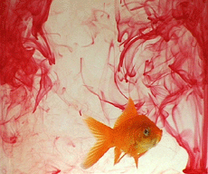

|
STEFAN NIKOLAEV
MINOUK LE POISSON PEINTRE | 1994-2004 | 17'35''
Format: DVD
www.traversee.com
Eine einzige Sequenz im Close-Up zeigt einen Goldfisch, der in einem Wasserbecken schwimmt. Die Einstellung ist so gewählt, dass die Ränder der Leinwand als Grenzen des Beckens fungieren, und der Fisch niemals aus dem Fokus der Kamera hinausschwimmen kann.
Auf einmal beginnen Tropfen einer roten, konzentrierten Farbe* in das klare Wasser zu fallen. Der umherschwimmende Fisch verteilt durch das Schnalzen seines Schwanzes und die Bewegungen seines Körpers die Farbe, die weiter in das Wasser tropft. Am Ende ist sie gleichmäßig verteilt und hat das Wasser vollständig rot gefärbt. Der Goldfisch, selbst rötlich, ist jetzt mit seiner Umgebung in dem Monochrom des rotgefärbten Wassers in einer Camouflage aufgegangen und verschwindet.
*ungiftige Farbe, als sicher getestet
Stefan Nikolaev, geb. 1970 in Sofia, Bulgarien. Lebt und arbeitet in Paris und Sofia. Er gestaltete dieses Jahr den bulgarischen Pavillion der 52. Biennale in Venedig.
Filme (Auswahl): Phone your friend, Galerie Artemide, Paris 1990 | Running with the King, Winchester Art Gallery, Winchester 1994 | Next Stop, Kunstmuseum Thun 1998 | Videothek auf Zeit, div. Orte 1998 | Nous nous sommes tant aimés, Ecole Nationale des Beaux-Arts, Paris 1999 | VTO Gallery London 2000 | Perfect Day, Temple Bar Gallery, Dublin 2002 | One for the money, two for the show, Galerie Michel Rein, Paris 2003
zurück
|